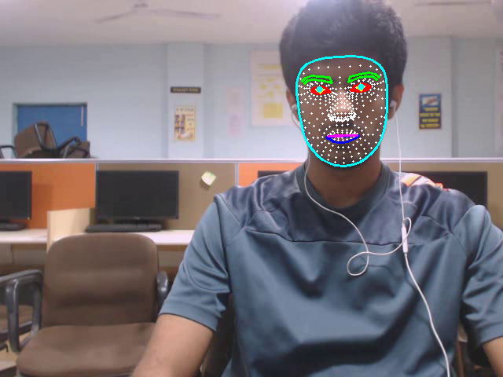

MODALITY CHOICE
Why the Face, and Why MediaPipe?
The face is the only universally available, non-invasive, passively observable signal of cognitive-affective state that every laptop already captures.
Non-invasive and passive monitoring — no wearables, no consent friction.
Facial expressions are universal across cultures.
MediaPipe enables real-time feature extraction on commodity CPUs.
| Feature Group | Dim | What it captures |
|---|---|---|
| Blendshape | 52D | Per-AU facial muscle activation |
| Head Pose | 6D | Pitch, yaw, roll + 3D position |
| Eye Gaze | 6D | Direction vectors for each eye |
| Composite | 10D | Cross-group engineered signals |
| Dynamics | 4D | Temporal expressiveness metrics |
| Total per-frame | 78D | One row per video frame |
MEDIAPIPE · 468 LANDMARKS
MediaPipe Face Mesh
MediaPipe Face Mesh — 468 landmarks, real-time on CPU.
30+
FPS on a single CPU
78D
Per-frame feature vector
